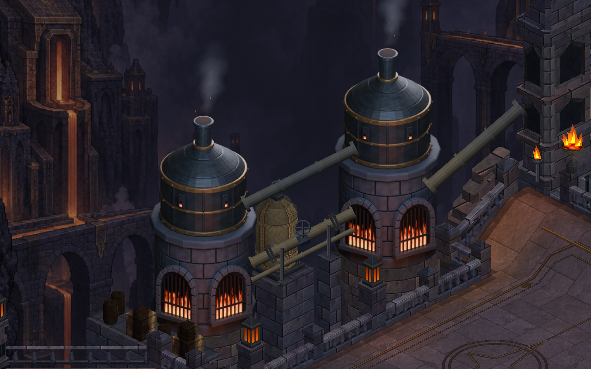
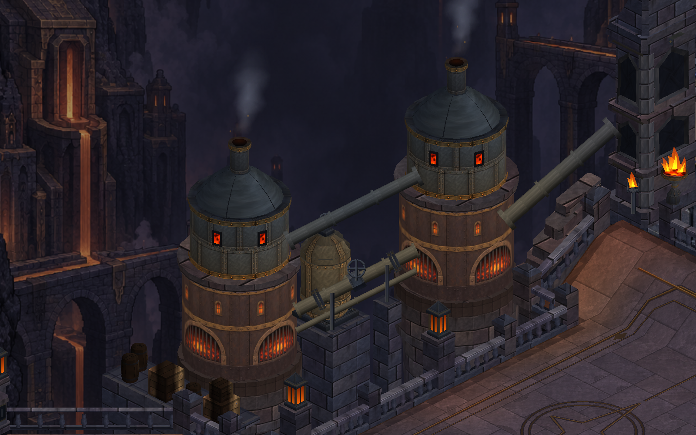
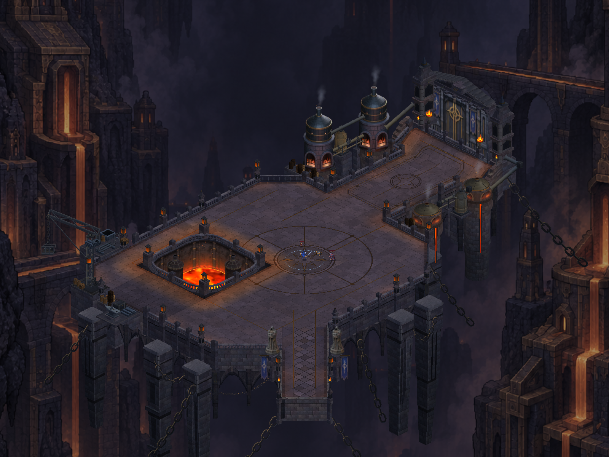

Kuzey fırınları aynı görsel dilde
İkinci büyük fırın da kemerli taş gövde ve biçimli metal kapağa kavuştu. İkisi ortak doku ve malzeme kullanıyor; haritanın çizici sayısı 20 olarak kaldı.
Birlikte görünüm

Aynı kamerayla karşılaştırma

Eski yapı · karşılaştırma için yeniden oluşturulduYeni ortak görünümOyun çerçevesi
Unity görüntüleri: kahraman yürünebilir noktalarda, HUD gizli.
Harita bütünü

Bu paket tüm referans kalitesinin tamamlandığı anlamına gelmiyor. Doğrulama ve sınırlar